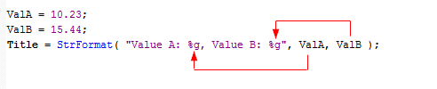

This error means that you have incorrect formatting sequence in printf/StrFormat call and/or the number of arguments passed to the function does not match the number of % specifiers in the formatting string.
When you call printf/StrFormat the very first string is a formatting string that tells how subsequent arguments are formatted for output. It is important for the list of subsequent arguments to match the number of % specifiers in the formatting string. In cases, where there is no match - AmiBroker will display Error 61.

The most common source of problem is forgetting the fact that actual percent sign must be typed as %% (double percent signs) because single percent sign is a start of formatting sequence, not actual percent sign.
printf("Actual percent
sign is not %." ); // WRONG use % instead
of %%
printf("Actual percent
sign is %%." ); // correct use of %%